Storyboard: Micro-course
Description
A micro-course “Introduction to Concept Maps” will teach the skill of concept mapping to graduate students who attend California State University Monterey Bay. So, the learners are graduate students enrolled in IST524 Instructional Technology, which is a required course. They'll be required to complete a 30-minute e-learning program. Also, they will complete a complementary discussion activity that will take approximately 30-minutes. For the learners, these activities are beneficial because concept mapping has been shown to significantly contribute to meaningful learning (Novak & Gowin, 1984). As the students are future instructional designers, it will be useful to them as they design learning experiences.
Finally, students’ knowledge of concept mapping will be assessed through an assignment. Students will be required to create three concept maps. Each concept map will be about one of the following well-known theories of learning: Behaviorism, Cognitivism and Constructivism. The concept maps will be graded according to the rubric that was defined in the project proposal. Of course, the rubric will be shared with the students along with their instructions. Both the instructor and I will be available for questions via email and during office hours for Week 3.
Metadata
Designer’s Name: Noah S. Kevy
Time: 60 minutes
Development Tool: Articulate 360 Rise, Canvas
Course Style Resources: Complies with standard MIST course design.
Outline
Introduction to Concept Mapping, an e-learning course developed in Rise.
- Welcome
- Rationale for learning
- Lesson 1
- Learning Outcomes
- Classify Diagrams
- Lesson 2
- Recognize Concepts
- Short Break
- Construct a Proposition
- Job Aid
- Read a Concept Map
- Acknowledgments & Copyright
- Further Reading
- Project Information
Welcome Page
Media: Articulate Rise
Audio: Yes, an audio narration of the rationale for learning will be included.
Music/Sound Effects: None
Interactions:
- Click the next/previous button for the next/previous page.
- Alt-text: Click next to continue.
Page Design:
Page design · Content and visual specifications
(Alt-text: Teaching and Learning by Concept Mapping)
Welcome to a mini-course on concept mapping.
Rationale for learning
Click play
…text
Author contact information Copyright abstract
Learning Objectives for Part 1
Media: Articulate Rise
Interactions:
- Click the next/previous button for the next/previous page.
- Alt-text: Click next to continue.
Page Design:
Page design · Content and visual specifications
(Alt-text: Teaching and Learning by Concept Mapping)
Learning Objectives for Part 1
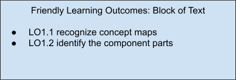
Author contact information Copyright abstract
Classify Diagrams
Media: Articulate Rise
Interactions:
- Click to reveal activity
- Multiple choice questions
- Click the next/previous button for the next/previous page.
- Alt-text: Click next to continue.
Page Design: Long Scroll Format
Page design · Content and visual specifications
(Alt-text: Teaching and Learning by Concept Mapping)
Example 1
To start, we will examine a very simple example.
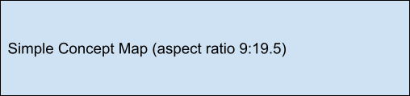
(Alt-text: 2 boxes with arrows are shown, Box 1 has an arrow pointing to Box 2. The arrow is labeled.)
Liquid and water
Water is a liquid
This diagram is a very simple concept map. Still, it is a concept map because it has all of the essential attributes that a concept map needs.
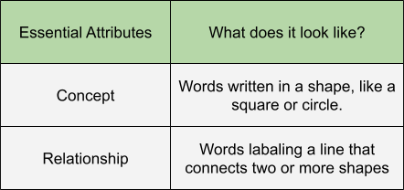
You try!
In this example, select the concepts.
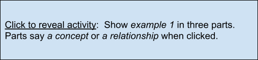
(water – is a → liquid)
Example 2
Here is another simple example. This time we will translate the concept map into a simple sentence.
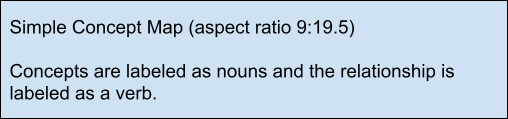
(Alt-text: salt – dissolves in → water)
When writing, sometimes we think about the grammar of a sentence. Sentences have nouns and verbs. Simple sentences have a subject and a predicate.
Most of the time…
concepts are nouns. And relationships are verbs.
There are exceptions, but for now we’ll stick with this rule of thumb.
Translate example 2
To translate it, we simply read example 2 aloud. The arrows point in the direction that the sentence is supposed to be read. Here → the arrows point from right to left.
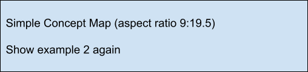
(Alt-text: salt dissolves in water)
Translation: Salt dissolves in water.
Non-Example 3
Here is a non-example. This is not a concept map.
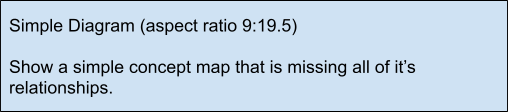
(Alt-text: tomato soup → tomato → salt → water → garlic)
This is not a concept map because the line between the two concepts is not labeled.
Non-Example 4
Here is another non-example.
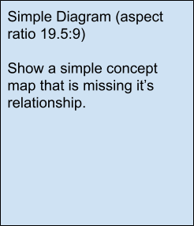
(Alt-text: tomato soup → tomato → salt → water → garlic)
Again, this is not a concept map because the lines between the concepts are not labeled.
Example 5
This concept map is bigger. We know it is a concept map because it has all of the essential attributes of a concept map.
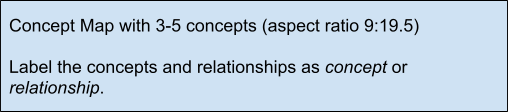
(Alt-text: salt water is a solution. Salt water contains salt and water. Water is a liquid at room temperature. Salt water is a liquid at room temperature.)
Question
How many relationships are there in the above example?
Ans: TBD
Question Type: open ended
Essential & Variable Attributes
Concept maps are used for study and revision. Study and revision contribute to metacognition. Concept maps promote metacognition. Metacognition contributes to successful learning. Successful learning creates enjoyment. Concept maps align with affective objectives, enjoyment for example.
In addition to essential attributes, concept maps have some variable attributes.
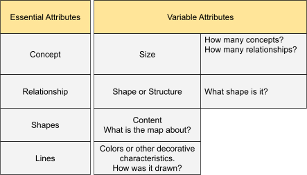
Question
Is the following diagram a concept map or not?
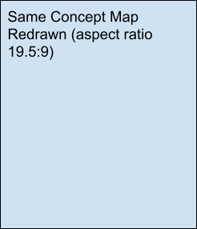
(Alt-text: *A solution could be salt water. Salt water contains salt and water. Water is a liquid at room temperature. Salt water is a liquid at room temperature.)
Question Type: 3 option multiple choice. (yes, not sure, no)
Confirmation: Right! You have seen this concept map before. Here it has been redrawn with a different structure.
Uncertain: Compare the content of this concept map to example 5. You’ll see that the content is the same; the concept map has been redrawn with a different structure.
Correction: No. This concept map contains the same content as example 5. Here it has been redrawn with a different structure.
Question
Some diagrams look similar to concept maps but are not concept maps.
Is this a concept map?
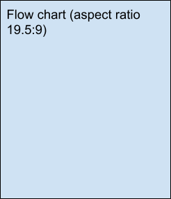
(Alt-text: start. Gather component parts. Get required tools. Read assembly instructions. Is there a next step? Yes → Execute instruction. No → stop.)
Question Type: 2 Option multiple choice.
Confirmation: Right! This diagram is called a Flow Chart. It is not a concept map.
Correction: TBD
Example 6
For this example, let's look at a bigger concept map.
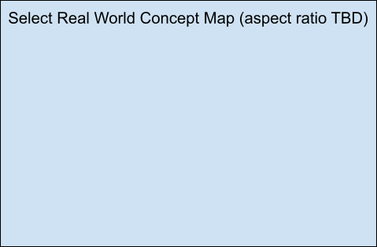
(Alt-text: *Concept map about concept mapping or taber’s map)
Question
How many concepts are there in this map?
Ans: TBD
Question type: open ended
Non-Example 7
This example is not a concept map. It’s an argument map
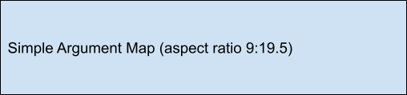
(I know Nancy likes tomato soup because she ordered tomato soup the last time we went to a restaurant. Because she asked me to buy ingredients for tomato soup)
Here there are complete sentences written in the boxes; and these sentences are connected with subordinating conjunctions, words like because or therefore.
This graphic is called an argument map. This graphic is a special kind of concept map, designed to show the component parts of an argument.
In this course, we will use concept maps, not argument maps. Remember that, for the most part, concepts are nouns (or noun phrases) and relationships are (verbs or verb phrases).
Reviewing Attributes
For the following questions, refer to this table of attributes.
Question
True or False, All concept maps must have 5 concepts.
Ans: False
Question Type: True or false
Correction: No, the number of concepts is called the size of a concept map. At a minimum, there must be two concepts.
Confirmation: Right! The number of concepts determines the size of a concept map. At a minimum, there must be two concepts.
Question
What does it mean for a concept map to have a high degree of connectedness?
Ans: The number of relationships is much larger than the number of concepts.
Question Type: Multiple Choice
Options: TBD
Confirmation: Right! In a concept map, the number of relationships determines connectedness. If the ratio of relationships to concepts is big, the concept map has a lot of connections.
Correction: TBD
Question
TBD
Example 8
Use the table of attributes to help you justify your decision. And remember, concepts are nouns and relationships are verbs.
Question
Why is the above diagram not a concept map?
Ans:
Questions
Which variable attributes differ between these two concept maps?
- Color, Connectedness and Size
- Color, Shape and Size
- Color and Connectedness
- Color and Shape
Right! The Color and Connectedness are different. Yet both concept maps have four concepts.
No, the Color and Connectedness differ. Both concept maps have four concepts, and they are the same shape.
Author contact information Copyright abstract
Learning Outcomes for Part 2
Media: Articulate Rise
Interactions:
- Click the next/previous button for the next/previous page.
- Alt-text: Click next to continue.
Page Design:
Page design · Content and visual specifications
(Alt-text: Teaching and Learning by Concept Mapping)
Learning Objectives for Part 1
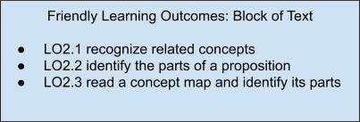
Author contact information Copyright abstract
Recognize Concepts
Media: Articulate Rise
Interactions:
- Click the next/previous button for the next/previous page.
- Alt-text: Click next to continue.
Page Design:
Page design · Content and visual specifications
(Alt-text: Teaching and Learning by Concept Mapping)
Example 1
Question:
To begin, identify the concepts in this sentence.
Salt water is a solution.
Which of the following concepts is in this sentence?
Question Type: multiple choice
Ans: Salt Water
Options: TBD
Question:
There is more than one concept. What is another one?
Salt water is a solution.
Question Type: multiple choice
Ans: solution
Options: TBD
Example 2 & 3
Now instead of analyzing a sentence, you will select the concepts that are related to a single word, which can be called a target word, a cue, or a stimulus.
In the following questions, the concept will be a noun. Think about how the concepts are related to their target words.
Interaction: Two multiple choice questions about related concepts. Use a mix of nouns and verbs for question options
Listing Concepts
The most common scenario is this: You will read a text, listen to some audio, or watch a video. Then, you’ll make a list of concepts related to what you have read.
Example 4
Read the following paragraph. What are some of the concepts that it contains?
In the field of Instructional Science and Technology (IST), there are a few trends that can be traced from today backwards in history. For example, distance and electronic learning (e-learning) might be traced backwards to the 1980s. When, in the U.S., M. David Merrill proposed that a computer program could provide intelligent suggestions about course design (Merrill, 1987). Or when, in the U.K., Diana Laurillard discussed principal forms of computer-aided learning (Laurillard, 1987). In the 1950s, educational television was considered to be the cutting-edge distance learning and e-learning technology (Reiser, 2025). Of course, e-learning is a relatively recent innovation when compared to distance learning. Before the term distance learning was used, such learning programs were called correspondence courses; and these programs are quite old.
This is a list of concepts that can be constructed from the paragraph above:
- Instructional Science and Technology
- Trends in Instructional Science and Technology
- Instructional designers
- Academics
- Distance learning
- Electronic learning (e-learning)
- Computer-aided learning
- Innovation
- Correspondence Courses
- Technology
- Learning Programs
- Course of study
Take a short break!
Author contact information Copyright abstract
Construct Propositions
Media: Articulate Rise
Interactions:
- Click the next/previous button for the next/previous page.
- Alt-text: Click next to continue.
Page Design:
Page design · Content and visual specifications
(Alt-text: Teaching and Learning by Concept Mapping)
Example 1
Take a moment to review how a simple concept map is like a sentence.
Question:
Which of the following verb phrases are shown in example 1?
Question Types: multiple choice questions
Propositions
A proposition is a three-part structure: Concept, Relationship, Concept.
Example 2
When writing, a paragraph is constructed from multiple sentences. Similarly, concept maps are constructed from multiple propositions.
Question:
What proposition is circled in Example 2?
Question Types: multiple choice questions
Constructing Propositions
With a list of concepts, you can construct a list of propositions.
This list is an example.
- Instructional Science and Technology
- Trends in Instructional Science and Technology
- Instructional designers
- Academics
- Distance learning
- Electronic learning (e-learning)
- Computer-aided learning
- Innovation
- Correspondence Courses
- Technology
- Learning Programs
- Course of study
- Computer Program
To construct a proposition, two related concepts can be used in a sentence.
For example, Distance Learning and Computer Programs are related concepts.
In the following question, please identify the relationship between these concepts.
Question:
Computer programs facilitate distance learning.
What is the relationship in this proposition?
Question Type: multiple choice
Ans: Facilitate
Confirmation: Right! Facilitate is the verb that relates these two concepts.
Correction: TBD
Question:
What concept pairs could be added to the list above?
Question Type: multiple choice
Ans: All of the above
Confirmation: Right! All of these are good options.
Correction: TBD
Audience & Message
If you are trying to convey a specific idea or message in your concept map, then you should only include concepts closely related to that overarching idea.
But if a concept map is for personal use, then you may include personal concepts, personal anecdotes, or examples.
Example 4
Propositions must be as clear as possible.
For example, Computer programs facilitate distance learning would be better if it was more descriptive.
Computer programs facilitate the implementation of distance learning.
Editing your list of concepts to explain what you're trying to say is an essential part of concept mapping.
Author contact information Copyright abstract
Job Aid
Media: Articulate Rise
Interactions:
- Click the next/previous button for the next/previous page.
- Alt-text: Click next to continue.
Page Design:
Page design · Content and visual specifications
(Alt-text: Teaching and Learning by Concept Mapping)
A Helpful Handout
To help you recognize concept maps, a handout has been provided.
Button to download: A-job-aid-icm.pdf
Please download the PDF file, and use this handout throughout the course.
Job Aid PDF
Page design · Content and visual specifications
Making Concept Maps
To identify whether a diagram is or is not a concept map, look for essential attributes. Review table 1 for a list of attributes.
Page design · Content and visual specifications
Table 1
Class Attributes of a Concept Map
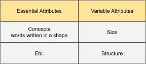
Figure 1
A Concept Map Example
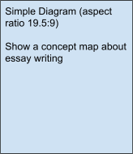
This concept map has 5 concepts and 3 relationships, and 4 propositions
Read a Concept Map
Media: Articulate Rise
Interactions:
- Click the next/previous button for the next/previous page.
- Alt-text: Click next to continue.
Page Design:
Page design · Content and visual specifications
(Alt-text: Teaching and Learning by Concept Mapping)
Read a Concept Map
In this section, you will read a few concept maps.
Examples
These concept maps all have four or five concepts.
Question:
Which of the above concept maps relates most closely to this sentence?
The term "story" means the sequence of events in a novel.
Question Type: multiple choice
Ans: TBD
Question
How many propositions are in example 189?
Question type: multiple choice
Ans: 6, six
** Add another diagram and question about how many propositions **
Question
Please type one of the propositions found in the above map.
Question type: insert text
Ans: TBD
Author contact information Copyright abstract
Acknowledgements & Copyright
Media: Articulate Rise
Music/Sound Effects: None
Interactions:
- Click the next/previous button for the next/previous page.
- Alt-text: Click next to continue.
Page Design:
Page design · Content and visual specifications
(Alt-text: Teaching and Learning by Concept Mapping)
Acknowledgements & Copyright
Congratulations
You have completed this course.
Good job! You answered many questions and learned about concept mapping.
Further Reading
If you like concept mapping, you can continue reading about it.
One of the most complete guides to concept mapping was written by Joseph D. Novak and D. Bob Gowin in 1984. Their book Learning How to Learn explains how concept mapping developed and why it's useful. Novak and his colleagues at the State University System of Florida even developed software for concept mapping. Check out their work here.(opens in a new tab)
Concept mapping progressed because educators all over the world adopted, experimented and innovated. This progression was synthesized in 2022 in a book chapter titled "The Mapping Principle," by Olusola O. Adesope, John C. Nesbit, and Narayankripa Sundararajan. The chapter was published in the 3rd edition of The Cambridge Handbook of Multimedia Learning, which was edited by Richard E. Mayer and Logan Fiorella.
Acknowledgements & Copyright
"Introducing Concept Maps" was designed for the Instructional Science and Technology program of California State University Monterey Bay(opens in a new tab). For the advice, critiques and encouragement of its faculty, the author is thankful.
Author contact information Copyright abstract
Storyboard: Discussion
Sharing Concept Maps
Media: Canvas Discussion Page
Music/Sound Effects: None
Interactions:
- Click the next/previous button for the next/previous page.
- Alt-text: Click next to continue.
- View the posts of peers
Page design · Content and visual specifications
In the previous assignment, you learned what a concept map is. Now, you'll make a concept map and share it with your peers.
Making a concept map is called concept mapping. Below you'll work through a three-part concept mapping protocol. Each part builds on the previous one; read the instructions carefully.
Part 1: Generate Concepts With AI
P1 Steps
1. Select a Topic
For this activity, the topic is given to you. Read the paragraph below; your concept map will be about the following paragraph.
Martin Davies (2011) mused about the future of computer-aided concept mapping. If the elements of a map could contain hyperlinks, he would ask students to link evidence as justification for their concepts or propositions. Really, Davies proposed software somewhat like the popular website Wikipedia. Therein, specific words/phrases are hyperlinks to articles, which explain the word/phrase. As well, to promote meaningful learning, Davies noted that concept mapping software, alone, would not be enough to promote meaningful learning. He called for a learning “sequence” or protocol, likening such a protocol to systematic approaches to essay writing (p. 295). Joseph Novak (who pioneered concept mapping in the 1970s) would have approved of Davies' approach. Novak, in his time, contributed to the development of CmapTools, a computer program that guided students’ construction of digital concept maps. And these digital concept maps could be worked on collaboratively by students and faculty at several different universities (Cañas et al., 2001).
2. Choose a GAI Platform
Please select whichever GAI platform is accessible. For example, you may use Claude, ChatGPT, or Gemini. Open your chat with AI in a new tab.
3. Write Your Prompt
A robust prompt has been provided for you. Copy-paste the prompt into your AI chat.
Copy-Paste this Prompt
4. Attach the Examples
Download then upload example-1-concept-list.docx
Download example-1-concept-list.docx
as an attachment to your prompt.
<Insert Screen Shot of AI user interface>
5. Submit Your Prompt
6. Edit & Share
Reply to this discussion, posting seven concepts from your list. Consider editing or replacing concepts with your own ideas. Write two sentences about one concept in your list. Explain why it relates to the given paragraph.
Part 2: Construct Propositions
P2 Steps
1. Make a List of Concepts
You will use the seven concepts that you selected in Part 1.
2. Choose a GAI Platform
As you already have an AI chat open, just start a new chat with Claude, ChatGPT or Gemini.
3. Write Your Prompt
A robust prompt has been provided; copy-paste the prompt into your AI chat.
Copy-Paste this Prompt
5. Add Your List of Concepts
Below the prompt, paste your list of seven concepts.
5. Attach the Examples
Download then upload example-2-proposition-list.docx
Download example-2-proposition-list.docx
as an attachment to your prompt.
6. Submit Your Prompt
7. Edit & Share
Return to your original post, and add to it. Do the following:
A. Select seven or eight propositions from the list generated by AI; edit them.
B. Explain the overarching idea expressed by your list of propositions in two or three sentences, no more.
Be sure to edit your propositions as necessary; it's an essential part of concept mapping. They should be simple sentences, but still descriptive.
For example, Computer programs facilitate distance learning would be better if it was more descriptive.
Computer programs facilitate the implementation of distance learning.
Part 3: Draw a Concept Map
P3 Steps
1. Make a List of Propositions
Use your seven or eight propositions from Part 2.
2. Choose a GAI Platform
You already have an AI chat open, so just start a new chat with Claude, ChatGPT or Gemini.
3. Write Your Prompt
A robust prompt has been provided; copy-paste the prompt into your AI chat.
Copy-Paste this Prompt
4. Add Your List of Propositions
Below the prompt, paste your list of propositions.
5. Attach the Examples
Download then upload example-3-concept-map.docx
Download example-3-concept-map.docx
as an attachment to your prompt.
6. Submit Your Prompt
7. Edit & Share
Please revise your concept map as needed, then post your final version. The map should contain at least six concepts and five relationships. Along with your concept map, write four sentences reflecting on your work. Address the following:
A. Clarity and purpose
What main message or idea are you trying to convey? Where should the reader begin when looking at your concept map?
B. Size and structure
How many key concepts and relationships are included? Are the concepts organized in a clear way, or do they need to be rearranged?
C. Relationships between concepts
Are the relationships between concepts accurate and meaningful? Should any relationships be added, revised or deleted?
Before posting, review your concept map and make necessary changes, such as moving concepts, adding or deleting relationships, changing fonts, or adjusting colors. To do so, search online for "free online tools to edit SVG files." Here are a couple of suggestions: Boxy SVG or Inkscape. Also, Adobe and Affinity Studio make products that edit scalable vector graphics, Adobe Illustrator for example.
You may request edits in your AI chat, but this strategy is hit or miss.
Double Check
You should use a single post for all three parts. Be sure to include the following items.
- A list of seven concepts.
- Write two sentences about one concept in your list. Explain why it relates to the paragraph in Part 1.
- A list of seven or eight propositions.
- Explain the overarching idea expressed by your list of propositions in two or three sentences, no more.
- A concept map with at least six concepts and five relationships.
- Write four sentences reflecting on your concept map.
Storyboard: Assignment
Media: Canvas Assignment
Music/Sound Effects: None
Interactions:
- Click the next/previous button for the next/previous page.
- Alt-text: Click next to continue.
Page design:
Page design · Content and visual specifications
Elaborating with Concept Maps
Instructions
CMapping or concept mapping is an elaborative instructional technique. For this activity you'll work with your knowledge of Behaviorism, Cognitivism, and Constructivism to make three concept maps.
Requirements
You'll create three concept maps, one for each theory of learning. Concepts and relationships should be specific to one of the three theories of learning. While you are editing your cmaps, notice how the theories of learning are alike and how they differ.
Each concept map must contain eight concepts and between eight and 28 relationships.
Please refer to the rubric < Link to an external rubric here > for detailed information about the required quality.
Upload a single file that contains all three concept maps. You may use Google Docs or Microsoft Word.
END.